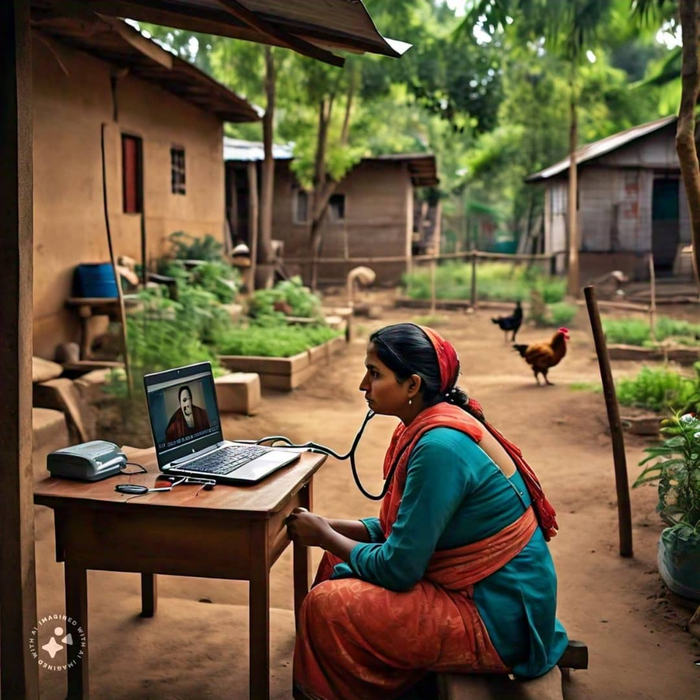

Telemedicine has been successfully implemented across various regions and for different medical conditions, showcasing its versatility and effectiveness in enhancing healthcare access
In remote regions lacking nearby healthcare facilities, telemedicine connects patients with specialists located in urban centers.
Telestroke programs enable neurologists to remotely diagnose and treat stroke patients in real-time, significantly reducing treatment delays and improving outcomes.
Platforms like Talkspace and BetterHelp offer online therapy sessions, making mental health support more accessible to individuals in rural or underserved areas.
Challenges in Rural Healthcare Access
Published on
Accessing healthcare in rural areas presents unique challenges due to geographic and infrastructure limitations. This article explores...
...
Discover initiatives and technologies aiming to improve healthcare access in rural communities...
Improved Access: Patients can now access healthcare services without the need for travel, which is particularly beneficial for elderly patients, those with mobility issues, or individuals residing in remote locations.
Virtual consultations reduce wait times for appointments, leading to quicker diagnosis and treatment initiation. This is critical for conditions requiring immediate attention, such as stroke or acute respiratory illnesses.
Specialist Access: Telemedicine connects patients with specialists worldwide, overcoming geographical limitations. For example, a rural primary care provider can consult with a dermatologist via telemedicine for skin conditions.
Role of Digital Health Apps in Patient Care
Published on
Digital health apps have transformed how patients manage their health, providing tools for monitoring conditions, accessing medical advice, and more...

...
Explore the benefits and challenges of integrating digital health apps into patient care...
Virtual Reality (VR): VR is used for immersive telehealth experiences, such as virtual consultations where patients can interact with healthcare providers as if they were in the same room.
AI-driven Diagnostics: AI algorithms analyze medical images and patient data to assist healthcare providers in diagnosing conditions accurately and promptly, enhancing diagnostic capabilities in telemedicine settings.
Remote Monitoring Devices: Wearable devices and sensors enable continuous monitoring of patients' vital signs and health metrics remotely, facilitating proactive healthcare management and early intervention.